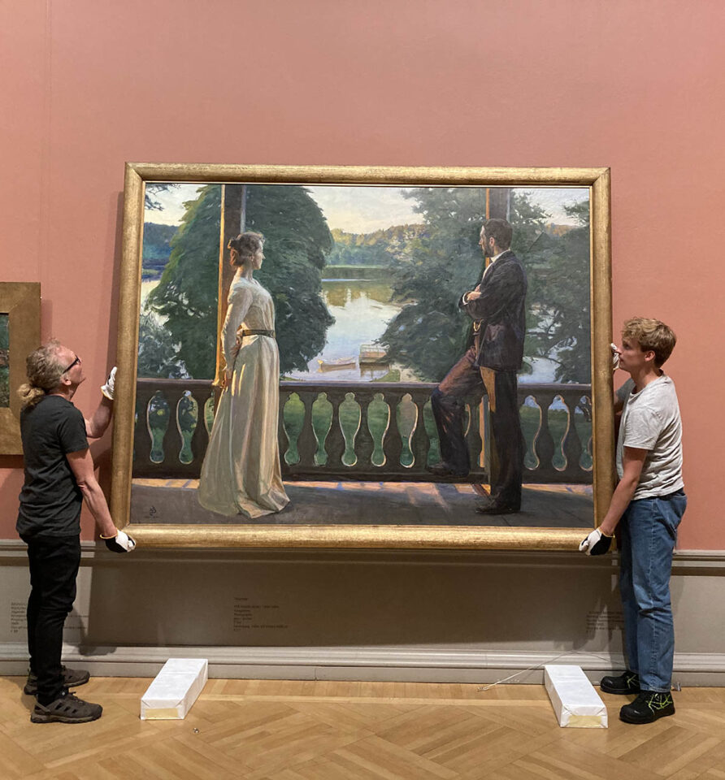

Nordisk sommarkväll lånas ut till Nationalmuseet i Warszawa
Ikonverk ur Göteborgs konstmuseums samling av sekeskifte möter publik i Warszawa.


Göteborgs konstmuseum är ett utmärkt exempel på hur museer genom strategiskt, målmedvetet arbete kan lyfta fram sina unika förutsättningar, vidareutvecklas och därmed bli ännu starkare aktörer, säger Mats Persson, generalsekreterare för Sveriges Museer i ett pressmeddelande.
Kulturnytt Sveriges radio, P1